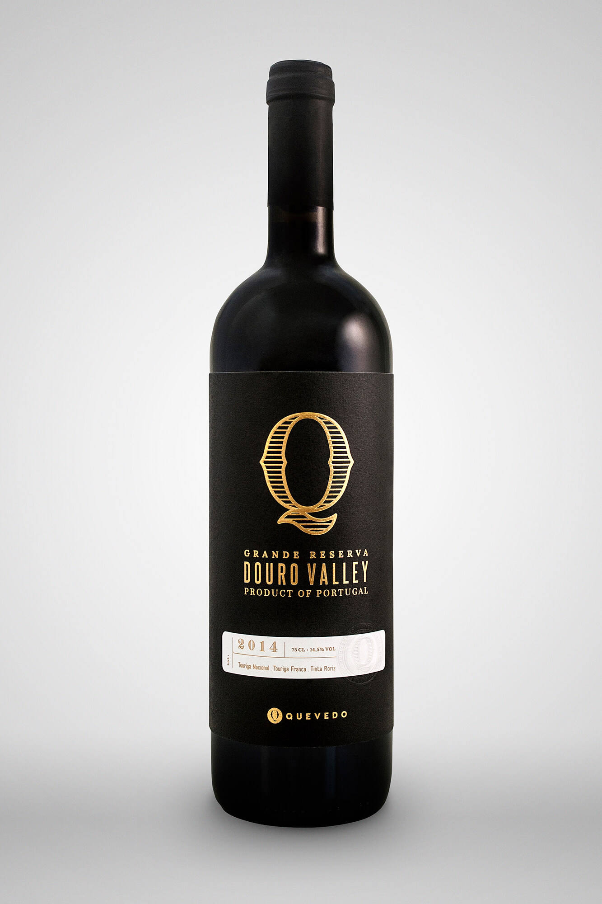
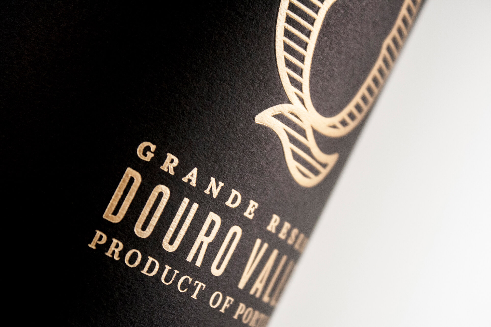
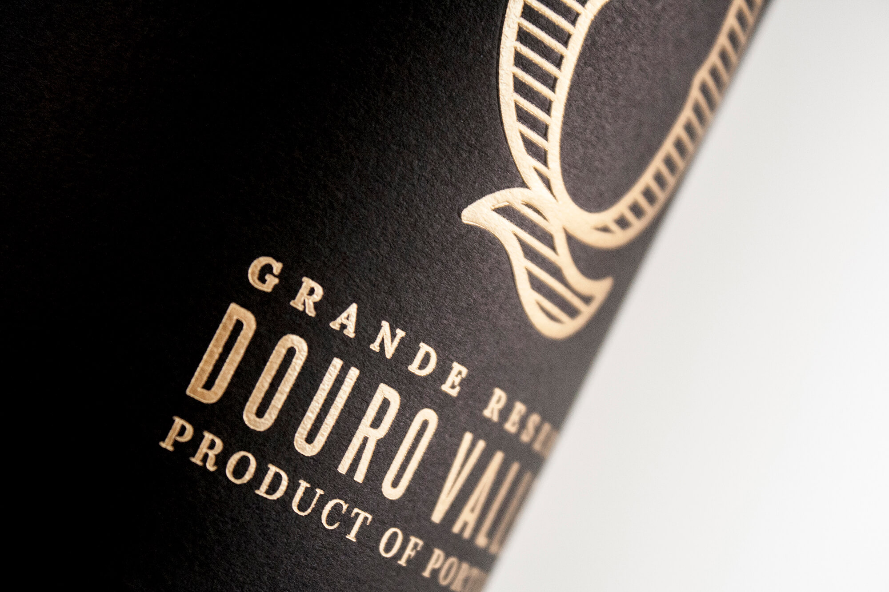
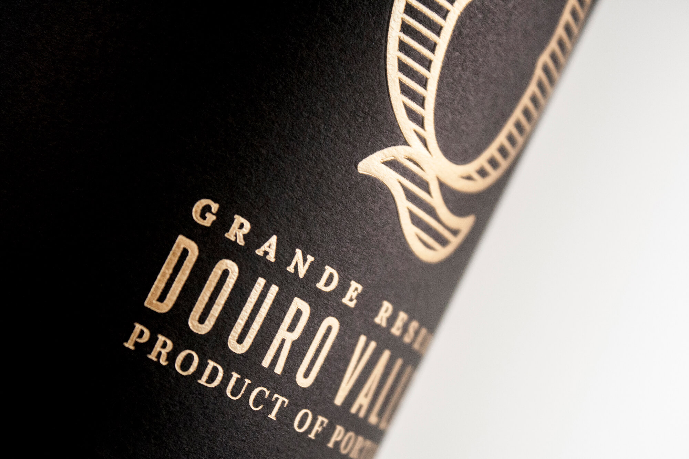

Quevedo Douro Wines rebrand - Q Grande Reserva
2017 /Label Design /Client: Vinoquel
Rebrand of the Quevedo Douro Wines.
Graphic Design: Rafaela Lucas
Creative director: André Kelly Breda
Brand Manager: Henri Sizaret
Photos: Rafaela Lucas

 




go back
back to top